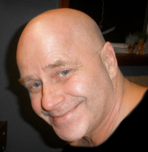

Structural Integration
The work of restructuring a body begins with the intention of creating balance. A balanced flexible body with consistent energy flow and efficient, easy movement is the goal for good health. Chronic pain and disease comes from restrictions and tightness in our bodies. In our tissue, we hold memories of physical, emotional, and spiritual discomfort or pain from our past. From all these experiences we become organized in patterns which determine our movement through gravity and life. Structural Integration induces change to release the body segments (arms, torso, legs, etc.), from lifelong patterns of tension, permitting the body to feel more balanced and integrated.
Can a body Change?
Yes. We created our patterns and we can change them to be more balanced or more reflective of our present life style.
With the help of the practitioner the client learns how to understand their body’s language and how to listen to its request for new behavior concerning its limits and what kind of love and nourishment it needs. Structural Integration is a relationship process to help expand your choices with yourself and create self responsibility.
Duncan’s work also includes modalities from Cranial Sacral, deep cellular trauma and shock release, pre and perinatal resolution and expanded spiritual connection. Duncan combines the concepts of soul and spirit embodiment, embryological development and client’s birth process. He believes that these early patterns become a blueprint for how we live our lives. When we become aware and conscious of our first experience we dramatically increase our understanding and choices in our present life situations.
He has worked with human beings from before birth through to aging and dying. Nobody is too old to understand their purpose and barriers to being fully alive.
Who would benefit from this work?
* People who feel tight, restricted or stressed
* People who want to know more about their body
* People who have body pain or illness
* People who are looking for more energy in life
* People who want to understand body language
* Practitioner who want to expand their treatment skills
Duncan Fraser M.T.C. DipC.

Duncan Fraser is a Certified Advanced Practitioner of Structural Integration. He has a Master’s Degree and a Diploma of Counselling from the Haven Institute and has trained in Cranial Sacral Therapy, Integrated Body Psychotherapy’ and Scientific Studies on the body’s Electro Magnetic Field, as well as Prenatal and Prenatal Psychotherapy with DR. William Emerson and Karlton Terry.
Duncan has spent over 20 years working with his own process physically and emotionally, and believes that our body’s hold the key to opening to our true nature which includes our spiritual fulfillment and joy. He works with his clients in a respectful way that honors their boundaries and individual needs and brings his sensitivity and compassion to his work with people. He has worked with groups and individuals in Canada, US, Japan, and Europe.
Duncan works from his home and the Haven Institute on Gabriloa Island. Duncan offer’s sessions of 1 hour or 1.5 hour to focus on specific issues. He also offers a complete 10 series to restructure the body working with a different intent and location in each session. This encourages whole body balance. Starting at a skin and working through to the deeper levels and finally strengthening our core and centeredness. His rates are $100.00 per hour .
Call Today to Book an Appointment: 250 247-0015